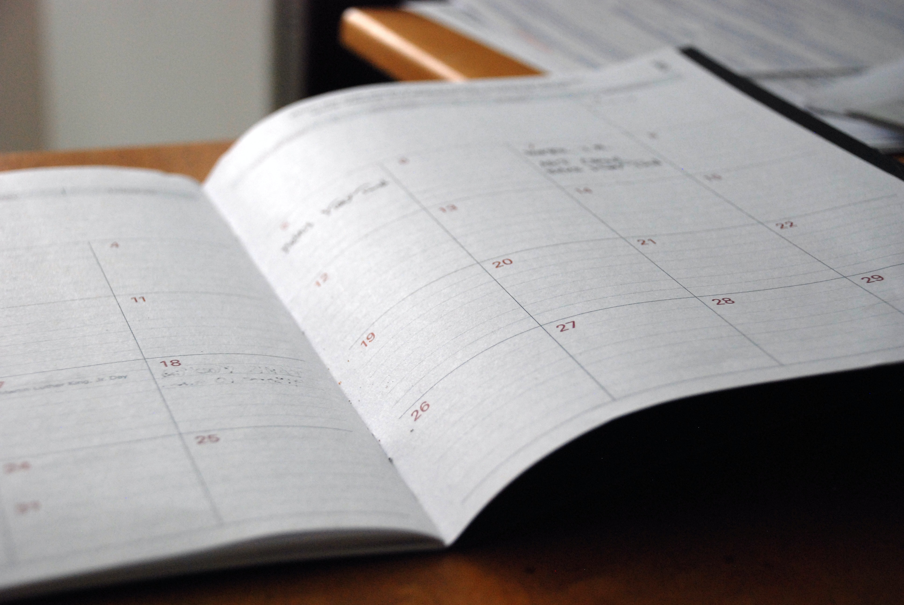
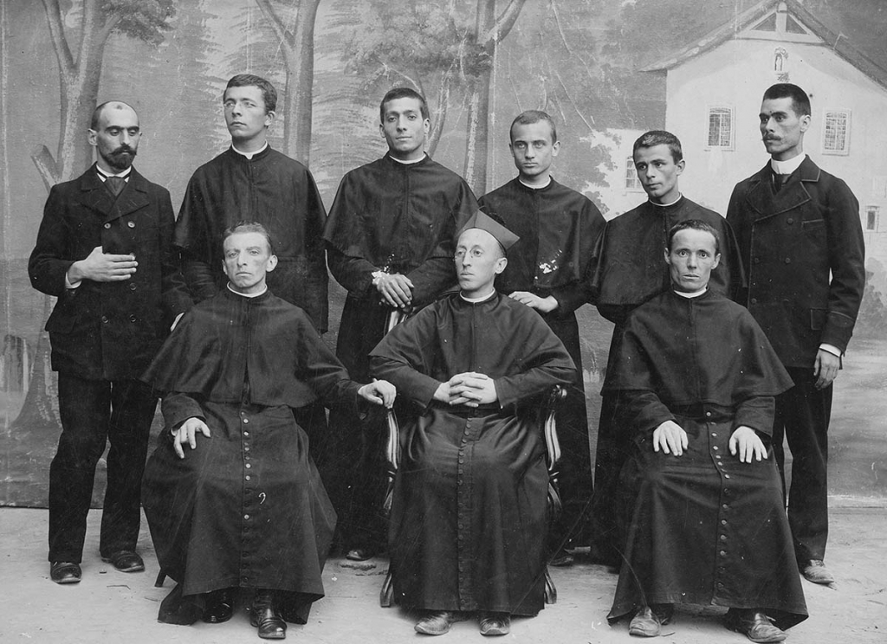

Study Skills
Schedule Ahead
Allocate time to study. This can help you organise time after school, and plan out how much time you need to spend revising. If you have homework or other assignments, you should plan ahead to complete it. This is a great way to stay on top of your classes and not fall behind. You can find a template for a timetable
here

Write a checklist
This doesn't just help with your organization but to feel accomplished. As you complete your homework or assignments you can feel just that bit better once you complete something by checking it off.
Use class time wisely
Make the most of your class time! It's dedicated to working on assignments and a perfect chance to seek feedback and clarification. If you're unsure about anything, don't hesitate to ask questions. We're here to help you excel!
Ask questions
Struggling with your school work? Don't worry; you're not alone. We're here to help! Reach out to your teachers, peers, or Academic Captains whenever you need assistance. We believe in supporting one another to ensure your success. Don't hesitate to ask for help; we've got your back!
Revise
Before each test or after a class and you learn something new, revise over it so you can remember it. If it is a difficult topic or test, spend that extra bit longer so you feel more confident going into the test knowing you have had time to revise over what you have learnt in class. Use the helpful sources that your teachers put on SEQTA or save the worksheets and PowerPoints that are for each lesson so it is easier to find when you need them. You can use Quizlet to help you with flash cards or make your own.
From Grantleigh to a Thriving Community: The Journey of Dominic College/Boys Town since 1946

When the Salesians first came here in 1946, the only buildings on our school site were the white house, known as Grantleigh, and some apple sheds.
There were 26 students in 1946 when the first Salesians arrived. Today we have 1,000 students and 130 staff. While the school has grown and expanded and continues to grow right now, with the building of the K-2 precinct, some things haven't changed. We have always been and continue to be a tight knit community.
By Caylin Daley
Created by Ethan Lane, Year 10 Information Technology 2023